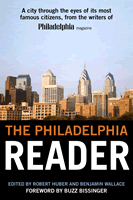

A chronicle of the city through the eyes of its most famous citizens, from the writers of Philadelphia magazine
A chronicle of the city through the eyes of its most famous citizens, from the writers of Philadelphia magazine


 A chronicle of the city through the eyes of its most famous citizens, from the writers of Philadelphia magazine
A chronicle of the city through the eyes of its most famous citizens, from the writers of Philadelphia magazine

|  |
The Philadelphia Readeredited by Robert Huber and Benjamin Wallace, foreword by Buzz Bissingerpaper EAN: 978-1-59213-461-8 (ISBN: 1-59213-461-0) |
"The sensory experience of Philadelphia comes every time I walk through it or ride through it. It's exciting and refreshing, but it's still not enough. I want secrets both delicious and dark. I want the intimacies of the people who make this city so unlike any other. Which is where Philadelphia magazine comes in.... Its journalism is the best of any urban magazine in the country, tough when it has to be, unflinching when it has to be, compassionate when it has to be.... If you want to know the heart of Philadelphia, the complete heart with all the different veins, sit back and enjoy and read these wonderful pieces..."
—Buzz Bissinger, from the Foreword
Do you love Philadelphia? Do you love good writing? Well, this is the book for you. It's about the people of Philadelphia—the good, the fine, and the imperfect. Yes, the sports heroes are here—Mike Schmidt, Julius ("Dr. J.") Erving. And the politicians—Ed Rendell, John Street. And the moguls—Brian Roberts, Comcast honcho. And the would-be moguls—Mark Yagalla, world-class embezzler. And so many more, including—writing in their own words—Terry Gross, Patti LaBelle, W. Wilson Goode, Sr., Judy Wicks, Judith Rodin, and Smarty Jones (proving that this horse is no one-trick pony). And so many more—25 of them in all. The people—and the horse—who have meant something to this city during the last 20 years. Ripped from the pages of Philadelphia magazine (well, OK, carefully removed and lovingly pasted into this book), here are profiles of the people who made an era.
Excerpt available at www.temple.edu/tempress
"In the 1960s and 1970s, Philadelphia magazine was a pioneer of the so-called New Journalism and largely defined the template of what a city or regional magazine can be. At a time when most city magazines were Bibles of Babbitt, peddling gaseous boosterism and selling content to advertisers, Philadelphia was breaking china in Main Line drawing rooms, shining light into the smoky back rooms of Old Philadelphia power, and writing unflinchingly about the city's seamy underbelly.... One of the staples of the magazine has always been the profile, an in-depth prose portrait of a newsmaker or larger-than-life character who in some way defines Philadelphia. This volume brings together, for the first time, some of the best of these pieces. The subjects are among the brightest lights in the recent history of Philadelphia—with a handful of infamous charmers and oddballs included for good measure—captured with a greater depth and intimacy than in any other medium."
—Robert Huber and Benjamin Wallace, from the Introduction
Foreword – Buzz Bissinger
Introduction
PART I: 1988 TO 1994
1. Mrs. Nose Builds Her Dream Closet (Sandra Newman) – Lisa DePaulo
2. The Transmogrifi cation of Arlen Specter – Alicia Mundy
3. Presumed Innocent (Mumia Abu-Jamal) – Devin Leonard
4. My Philadelphia Story: W. Wilson Goode, Sr. Interview – Roxanne Patel
5. Bobby Simone's Last 1,000 Martinis – Lisa DePaulo
6. "How Many Ed Rendells Are There?" – Lisa DePaulo
PART II: 1995 TO 1999
7. End of the Line (Robert Montgomery Scott) – Mark Kram Jr.
8. The Unloved (Mike Schmidt) – Larry Platt
9. A Proper Distance (Anne d'Harnoncourt) – Amy Donohue
10. My Philadelphia Story: Judy Wicks Interview – Benjamin Wallace
11. Roberts Rules (Brian Roberts) – Larry Platt
12. Murder, He Sculpted (Frank Bender) – Sabrina Rubin Erdely
13. Who's Afraid of Richard Glanton? – Mark Cohen
14. My Philadelphia Story: Judith Rodin Interview – Sabrina Rubin Erdely
15. The Trouble with Harry (Harry Jay Katz) – Stephen Rodrick
16. Richard Sprague Knows Everything – Buzz Bissinger
17. Shut Up, You Wimps, and Pull (Mike Teti) – Christopher McDougall
18. My Philadelphia Story: Terry Gross Interview – Robert Huber
PART III: 2000 TO 2004
19. Second Coming (Mayor John Street) – Christopher McDougall
20. Night Moves (M. Night Shyamalan) – Maximillian Potter
21. Vernon the Barbarian (Vernon Hill) – Larry Platt
22. My Philadelphia Story: Smarty Jones Interview – Benjamin Wallace
23. The Prodigy and the Playmate (Mark Yagalla) – Benjamin Wallace
24. Soul Reviver (Kenny Gamble) – Elizabeth Gold
25. Julius Erving Doesn't Want to Be a Hero Anymore – Robert Huber
26. My Philadelphia Story: Patti LaBelle Interview – Sandy Hingston
27. Boo-Boos in Paradise (David Brooks) – Sasha Issenberg
28. Did Dr. Norwood Go Too Far? (Dr. William Norwood) – Jason Fagone
29. Would You Throw Your Bra at This Kid? (Lang Lang) – Christopher
McDougall
 | Robert Huber is senior editor at Philadelphia magazine. |
 | Benjamin Wallace is editor-at-large at Philadelphia magazine. |
Philadelphia Region
General Interest
History
© 2015 Temple University. All Rights Reserved. This page: http://www.temple.edu/tempress/titles/1864_reg.html.